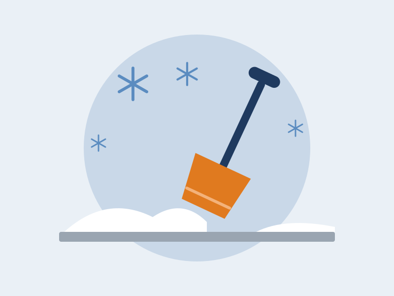
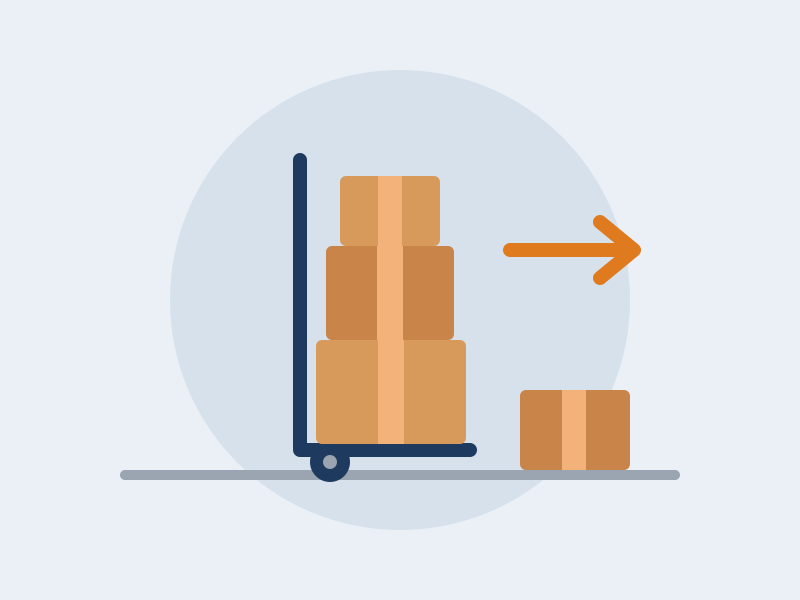

Kleinreparaturen
Tropfender Wasserhahn, klemmende Tür oder lockere Steckdose – wir erledigen kleine Reparaturen schnell und sauber.
Zuverlässig, pünktlich und zu fairen Preisen – wir kümmern uns um alles, was rund um Ihre Immobilie anfällt.
Kontakt aufnehmen
Tropfender Wasserhahn, klemmende Tür oder lockere Steckdose – wir erledigen kleine Reparaturen schnell und sauber.
Wir bauen Möbel auf, montieren Lampen, Regale und Gardinenstangen.

Rasen mähen, Hecken schneiden, Laub entfernen – Ihr Garten bleibt das ganze Jahr gepflegt.

Schneeräumen und Streuen von Gehwegen und Einfahrten – früh am Morgen, bevor Sie losmüssen.

Regelmäßige Reinigung von Treppenhäusern, Fluren und Kellerräumen in Mehrfamilienhäusern.

Wir räumen Keller, Dachböden und Garagen und entsorgen alles fachgerecht.
Rufen Sie uns an oder schreiben Sie uns – wir melden uns schnell zurück.